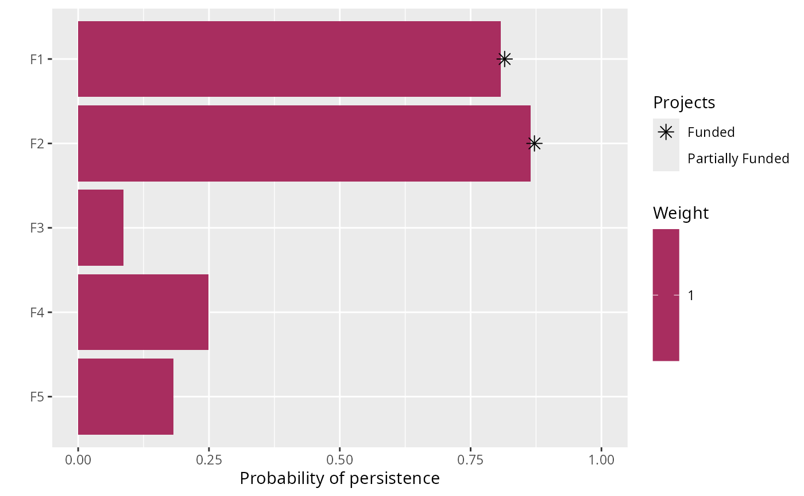

An objective is used to specify the overall goal of a project prioritization
problem(). All project prioritization problems involve
minimizing or maximizing some kind of objective. For instance, the decision
maker may require a funding scheme that maximizes the total number of
species that are expected to persist into the future whilst ensuring that
the total cost of the funded actions does not exceed a budget.
Alternatively, the planner may require a solution that ensures that
each species meets a target level of persistence whilst minimizing the cost
of the funded actions. A project prioritization
problem() must have a specified objective before it can
be solved, and attempting to solve a problem which does not have
a specified objective will throw an error.
Details
The following objectives can be added to a conservation planning
problem():
add_max_richness_objective()Maximize the total number of features that are expected to persist, whilst ensuring that the cost of the solution is within a pre-specified budget (Joseph, Maloney & Possingham 2009).
add_max_targets_met_objective()Maximize the total number of persistence targets met for the features, whilst ensuring that the cost of the solution is within a pre-specified budget (Chades et al. 2015).
add_max_phylo_div_objective()Maximize the phylogenetic diversity that is expected to persist into the future, whilst ensuring that the cost of the solution is within a pre-specified budget (Bennett et al. 2014, Faith 2008).
add_min_set_objective()Minimize the cost of the solution whilst ensuring that all targets are met. This objective is conceptually similar to that used in Marxan (Ball, Possingham & Watts 2009).
References
Ball IR, Possingham HP & Watts M (2009) Marxan and relatives: software for spatial conservation prioritisation. Spatial conservation prioritisation: Quantitative methods and computational tools, 185-195.
Bennett JR, Elliott G, Mellish B, Joseph LN, Tulloch AI, Probert WJ, Di Fonzo MMI, Monks JM, Possingham HP & Maloney R (2014) Balancing phylogenetic diversity and species numbers in conservation prioritization, using a case study of threatened species in New Zealand. Biological Conservation, 174: 47--54.
Chades I, Nicol S, van Leeuwen S, Walters B, Firn J, Reeson A, Martin TG & Carwardine J (2015) Benefits of integrating complementarity into priority threat management. Conservation Biology, 29, 525--536.
Faith DP (2008) Threatened species and the potential loss of phylogenetic diversity: conservation scenarios based on estimated extinction probabilities and phylogenetic risk analysis. Conservation Biology, 22: 1461--1470.
Joseph LN, Maloney RF & Possingham HP (2009) Optimal allocation of resources among threatened species: A project prioritization protocol. Conservation Biology, 23, 328--338.
See also
Examples
# load data data(sim_projects, sim_features, sim_actions, sim_tree) # build problem with maximum richness objective and $200 budget p1 <- problem(sim_projects, sim_actions, sim_features, "name", "success", "name", "cost", "name") %>% add_max_richness_objective(budget = 200) %>% add_binary_decisions() # \donttest{ # solve problem s1 <- solve(p1)#> Gurobi Optimizer version 9.0.1 build v9.0.1rc0 (linux64) #> Optimize a model with 47 rows, 47 columns and 102 nonzeros #> Model fingerprint: 0x35c8d3f0 #> Variable types: 0 continuous, 42 integer (42 binary) #> Semi-Variable types: 5 continuous, 0 integer #> Coefficient statistics: #> Matrix range [9e-02, 1e+02] #> Objective range [1e+00, 1e+00] #> Bounds range [1e+00, 1e+00] #> RHS range [1e+00, 2e+02] #> Found heuristic solution: objective 1.4456093 #> Presolve removed 16 rows and 12 columns #> Presolve time: 0.00s #> Presolved: 31 rows, 35 columns, 65 nonzeros #> Variable types: 0 continuous, 35 integer (35 binary) #> Presolved: 31 rows, 35 columns, 65 nonzeros #> #> #> Root relaxation: objective 2.190381e+00, 11 iterations, 0.00 seconds #> #> Nodes | Current Node | Objective Bounds | Work #> Expl Unexpl | Obj Depth IntInf | Incumbent BestBd Gap | It/Node Time #> #> * 0 0 0 2.1903807 2.19038 0.00% - 0s #> #> Explored 0 nodes (11 simplex iterations) in 0.00 seconds #> Thread count was 1 (of 4 available processors) #> #> Solution count 1: 2.19038 #> #> Optimal solution found (tolerance 0.00e+00) #> Best objective 2.190380737245e+00, best bound 2.190380737245e+00, gap 0.0000%#> # A tibble: 1 x 21 #> solution status obj cost F1_action F2_action F3_action F4_action F5_action #> <int> <chr> <dbl> <dbl> <dbl> <dbl> <dbl> <dbl> <dbl> #> 1 1 OPTIM~ 2.19 195. 1 1 0 0 0 #> # ... with 12 more variables: baseline_action <dbl>, F1_project <dbl>, #> # F2_project <dbl>, F3_project <dbl>, F4_project <dbl>, F5_project <dbl>, #> # baseline_project <dbl>, F1 <dbl>, F2 <dbl>, F3 <dbl>, F4 <dbl>, F5 <dbl># } # build problem with maximum phylogenetic diversity objective and $200 budget p2 <- problem(sim_projects, sim_actions, sim_features, "name", "success", "name", "cost", "name") %>% add_max_phylo_div_objective(budget = 200, tree = sim_tree) %>% add_binary_decisions() # \donttest{ # solve problem s2 <- solve(p2)#> Gurobi Optimizer version 9.0.1 build v9.0.1rc0 (linux64) #> Optimize a model with 50 rows, 50 columns and 123 nonzeros #> Model fingerprint: 0x4b572399 #> Model has 3 piecewise-linear objective terms #> Variable types: 3 continuous, 42 integer (42 binary) #> Semi-Variable types: 5 continuous, 0 integer #> Coefficient statistics: #> Matrix range [9e-02, 1e+02] #> Objective range [2e-01, 2e+00] #> Bounds range [1e+00, 1e+00] #> RHS range [1e+00, 2e+02] #> Found heuristic solution: objective 1.7230501 #> Presolve removed 16 rows and 12 columns #> Presolve time: 0.00s #> Presolved: 37 rows, 2547 columns, 2589 nonzeros #> Variable types: 2512 continuous, 35 integer (35 binary) #> Presolve removed 3 rows and 3 columns #> Presolved: 34 rows, 2544 columns, 2583 nonzeros #> #> #> Root relaxation: objective 2.638346e+00, 20 iterations, 0.00 seconds #> #> Nodes | Current Node | Objective Bounds | Work #> Expl Unexpl | Obj Depth IntInf | Incumbent BestBd Gap | It/Node Time #> #> 0 0 2.63835 0 6 1.72305 2.63835 53.1% - 0s #> H 0 0 1.9924877 2.63835 32.4% - 0s #> 0 2 2.63696 0 6 1.99249 2.63696 32.3% - 0s #> * 1 3 1 2.1724148 2.59317 19.4% 3.0 0s #> * 5 3 2 2.5726722 2.57267 0.00% 3.6 0s #> #> Explored 6 nodes (38 simplex iterations) in 0.03 seconds #> Thread count was 1 (of 4 available processors) #> #> Solution count 1: 2.57267 #> #> Optimal solution found (tolerance 0.00e+00) #> Best objective 2.572672188340e+00, best bound 2.572672188340e+00, gap 0.0000%#> # A tibble: 1 x 21 #> solution status obj cost F1_action F2_action F3_action F4_action F5_action #> <int> <chr> <dbl> <dbl> <dbl> <dbl> <dbl> <dbl> <dbl> #> 1 1 OPTIM~ 2.57 194. 1 0 0 0 1 #> # ... with 12 more variables: baseline_action <dbl>, F1_project <dbl>, #> # F2_project <dbl>, F3_project <dbl>, F4_project <dbl>, F5_project <dbl>, #> # baseline_project <dbl>, F1 <dbl>, F2 <dbl>, F3 <dbl>, F4 <dbl>, F5 <dbl># } # build problem with maximum targets met objective, $200 budget, and # 40% persistence targets p3 <- problem(sim_projects, sim_actions, sim_features, "name", "success", "name", "cost", "name") %>% add_max_targets_met_objective(budget = 200) %>% add_absolute_targets(0.4) %>% add_binary_decisions() # \donttest{ # solve problem s3 <- solve(p3)#> Gurobi Optimizer version 9.0.1 build v9.0.1rc0 (linux64) #> Optimize a model with 47 rows, 47 columns and 102 nonzeros #> Model fingerprint: 0x7499566b #> Variable types: 0 continuous, 47 integer (47 binary) #> Coefficient statistics: #> Matrix range [9e-02, 1e+02] #> Objective range [1e+00, 1e+00] #> Bounds range [1e+00, 1e+00] #> RHS range [1e+00, 2e+02] #> Found heuristic solution: objective 2.0000000 #> Presolve removed 11 rows and 7 columns #> Presolve time: 0.00s #> Presolved: 36 rows, 40 columns, 75 nonzeros #> Variable types: 0 continuous, 40 integer (40 binary) #> Presolved: 36 rows, 40 columns, 75 nonzeros #> #> #> Root relaxation: cutoff, 17 iterations, 0.00 seconds #> #> Nodes | Current Node | Objective Bounds | Work #> Expl Unexpl | Obj Depth IntInf | Incumbent BestBd Gap | It/Node Time #> #> 0 0 cutoff 0 2.00000 2.00000 0.00% - 0s #> #> Explored 0 nodes (17 simplex iterations) in 0.00 seconds #> Thread count was 1 (of 4 available processors) #> #> Solution count 1: 2 #> #> Optimal solution found (tolerance 0.00e+00) #> Best objective 2.000000000000e+00, best bound 2.000000000000e+00, gap 0.0000%#> # A tibble: 1 x 21 #> solution status obj cost F1_action F2_action F3_action F4_action F5_action #> <int> <chr> <dbl> <dbl> <dbl> <dbl> <dbl> <dbl> <dbl> #> 1 1 OPTIM~ 2 195. 1 1 0 0 0 #> # ... with 12 more variables: baseline_action <dbl>, F1_project <dbl>, #> # F2_project <dbl>, F3_project <dbl>, F4_project <dbl>, F5_project <dbl>, #> # baseline_project <dbl>, F1 <dbl>, F2 <dbl>, F3 <dbl>, F4 <dbl>, F5 <dbl># } # build problem with minimum set objective, $200 budget, and 40% # persistence targets p4 <- problem(sim_projects, sim_actions, sim_features, "name", "success", "name", "cost", "name") %>% add_min_set_objective() %>% add_absolute_targets(0.4) %>% add_binary_decisions() # \donttest{ # solve problem s4 <- solve(p4)#> Gurobi Optimizer version 9.0.1 build v9.0.1rc0 (linux64) #> Optimize a model with 46 rows, 42 columns and 92 nonzeros #> Model fingerprint: 0x9cba05f4 #> Variable types: 0 continuous, 42 integer (42 binary) #> Coefficient statistics: #> Matrix range [9e-02, 1e+00] #> Objective range [9e+01, 1e+02] #> Bounds range [1e+00, 1e+00] #> RHS range [4e-01, 1e+00] #> Found heuristic solution: objective 497.7671458 #> Presolve removed 45 rows and 20 columns #> Presolve time: 0.00s #> Presolved: 1 rows, 22 columns, 2 nonzeros #> Variable types: 0 continuous, 22 integer (22 binary) #> #> Explored 0 nodes (0 simplex iterations) in 0.00 seconds #> Thread count was 1 (of 4 available processors) #> #> Solution count 1: 497.767 #> #> Optimal solution found (tolerance 0.00e+00) #> Best objective 4.977671458279e+02, best bound 4.977671458279e+02, gap 0.0000%#> # A tibble: 1 x 21 #> solution status obj cost F1_action F2_action F3_action F4_action F5_action #> <int> <chr> <dbl> <dbl> <dbl> <dbl> <dbl> <dbl> <dbl> #> 1 1 OPTIM~ 498. 498. 1 1 1 1 1 #> # ... with 12 more variables: baseline_action <dbl>, F1_project <dbl>, #> # F2_project <dbl>, F3_project <dbl>, F4_project <dbl>, F5_project <dbl>, #> # baseline_project <dbl>, F1 <dbl>, F2 <dbl>, F3 <dbl>, F4 <dbl>, F5 <dbl># }